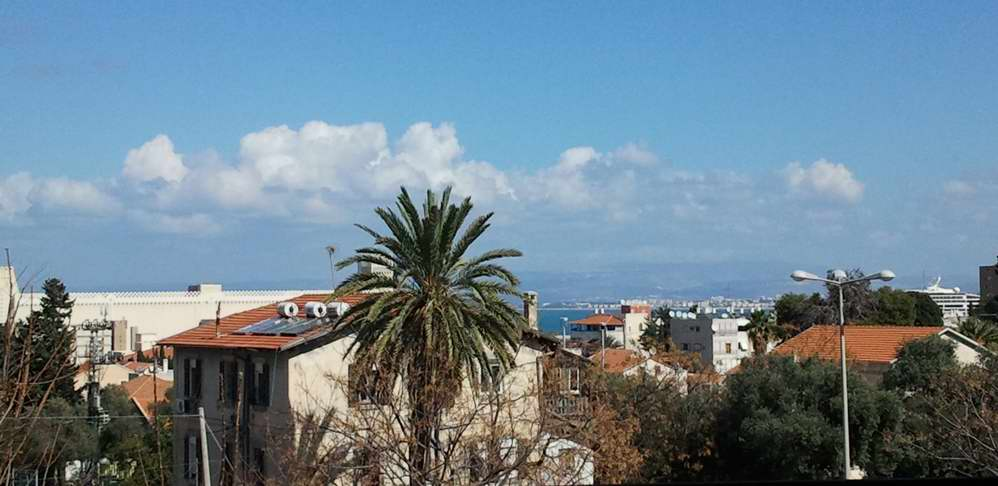
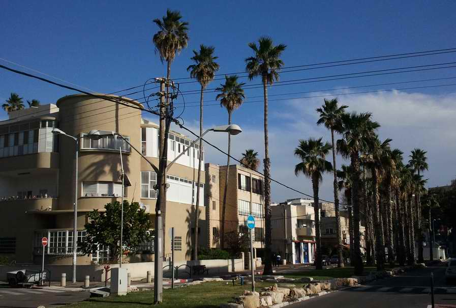
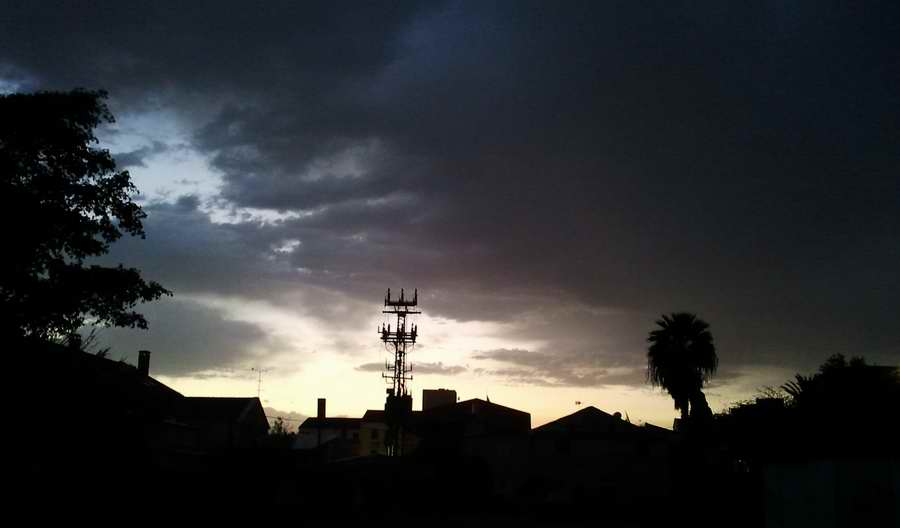
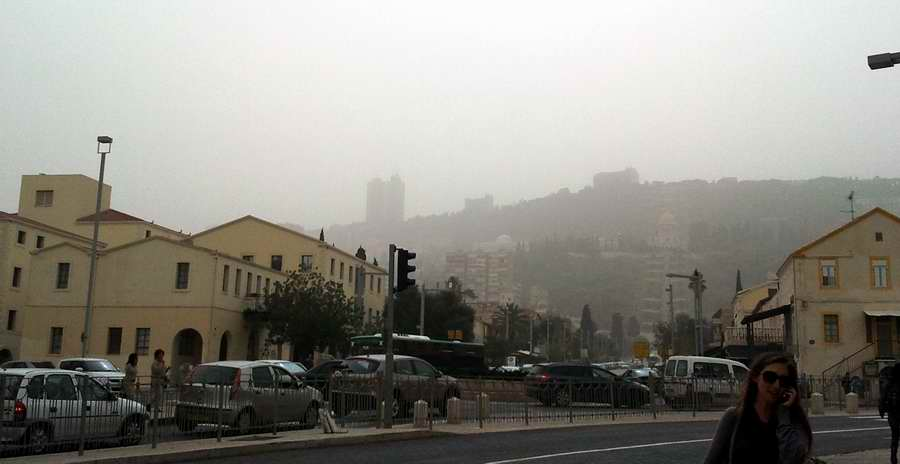
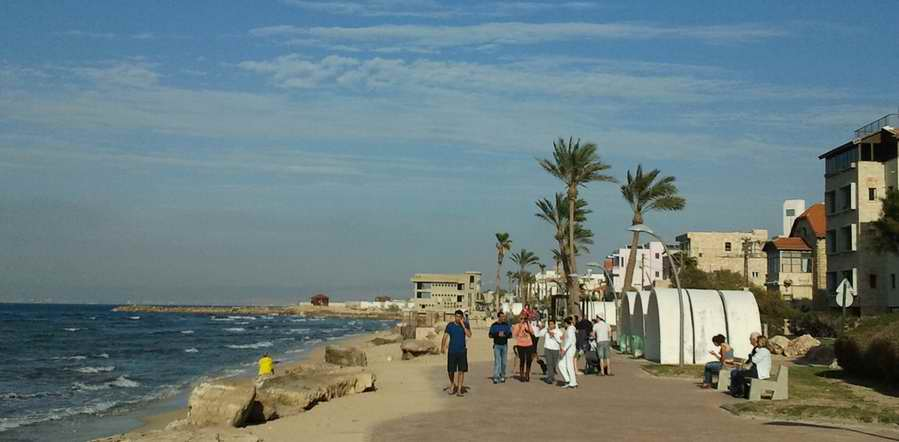

Я - СИОНИСТ! /ко дню Независимости ИЗРАИЛЯ/
Так сложилось, что моя судьба и судьба многих других моих родичей, репатриантов из бывшего СССР, сложилась так, что мы были отрваны от корней, от еврейства. И сейчас здесь в Израиле мы научаемся как бы заново, что значит быть Израилем пред Всевышним. Я учусь любить эту землю, обещанную еще отцам нашим и нам в роды наши.

Яир Лапид. Я - СИОНИСТ!
Музыка Даниэля Круглова
Читает Эфраим Калиш
Я согласен с каждым словом этого эссе. И все здесь отзывается в моем сердце.

***
АТИКВА (гимн Израиля "Надежда") в исполнении Барбары Стайзанд.


***
Паломники поднимаются в Святую Землю (Holy Land).
Они будто входят в огромную библиотеку, не знающую равных в мире, называемую Библией. От восторга лицезрения великих манускриптов их сердце бьется чаще и комок подступает к горлу. Восторженно смотрят они на эти древние кожаные оклады с потемневшими бронзовыми пряжками в виде диковинных зверей. Тысячелетия смотрят на них с книжных полок. Золотые тесненные надписи на неведомом древнееврейском языке завораживают их.
Они готовы целовать эти святыни, но трепет пред вечностью останавливает их. От робости они решаются лишь поднести к ним свою ладонь, не смея прикоснуться.
Я радуюсь за таких туристов, но не завидую. Я знаю, они завидуют мне. ОНИ видят эти книги снаружи. И переплеты Книги повергают их в трепет.
МЫ живем внутри этой Книги. Для нас это не священная пыль истории. Для нас это священная плоть современной реальности. Мы живем в ней, радуемся, страдаем. И это библейские страдания, и это библейская радость.

***
Песня Коби Оза (иврит)
Содержание песни: Когда я задаюсь вопросом, кто и что я? Размышляя, я нахожу в себе немного от ашкенази (европейские евреи), немного от сфаради (восточные евреи). Есть во мне часть чисто израильская и та, что я принес из галута. Светский ли я или религиозный, не хуже и не лучше других, просто еhуди (еврей). Я и студент, и солдат. Во мне много от традиций моих отцов и я устремлен в будущее.
автор: Эфраим Калиш /TORAART/
Я – СИОНИСТ
Я – сионист. Я верю в то, что в Эрец Исраэль восстал еврейский народ, хотя и с опозданием. Если бы он послушался будильника, не было бы Катастрофы, и мой покойный дедушка, тот, в честь которого я ношу свое имя, успел бы станцевать с моей бабушкой последний вальс на берегу Яркона.
Я – сионист. Иврит — тот язык, на котором я благодарю Всевышнего и ругаюсь на светофоре. Зануда, который называет меня «aхи» (братишка), действительно является моим братом. Танах включает в себя не только мою историю, но и географию: царь Саул искал ослиц под трассой номер 443, пророк Йона поднялся на корабль в яффском порту, недалеко от ресторана «Маргарет Таяр», а балкон, с которого Давид подсматривал за Вирсавией, наверняка купил какой-нибудь олигарх.
Я – сионист. В первый раз, когда я увидел своего сына в форме ЦАХАЛа (изр.армии), я заплакал. Я уже двадцать лет не пропускаю зажигание факелов на День независимости, и хотя мой телевизор корейского происхождения, я научил его болеть за нашу сборную.
Я – сионист. Я верю в наше право на эту землю. У людей, которые на протяжении истории испытывали несправедливые гонения, есть право на свою страну плюс F-16 (подарок от производителя). Мне больно от любого проявления антисемитизма — от Лондона до Бомбея, но в глубине души я думаю, что евреи, живущие за границей, не понимают что-то очень базисное про этот мир. Государство Израиль было построено не для того, чтобы антисемитизм исчез, а для того, чтобы мы могли послать антисемитов подальше.
Я – сионист. В меня стреляли в Ливане, в Кирьят-Шмоне «катюша» упала всего в нескольких метрах от меня, ракеты падали возле моего дома во время операции «Буря в пустыне». Я был в Сдероте, когда там звучала сирена, мои дети сидели в убежище, еще не умея выговаривать свое имя, прижимаясь к бабушке, приехавшей сюда из Польши, спасаясь от смерти, но тем не менее я всегда чувствовал себя счастливчиком из-за того, что живу тут и в любом другом месте мне не так хорошо.
Я – сионист. Я считаю, что любой человек, живущий здесь, должен служить в армии, платить налоги, голосовать на выборах и знать наизусть слова хотя бы одной песни Шалома Ханоха. Я считаю, что государство Израиль это не только место, но и идея, и я всем сердцем верю в три дополнительные заповеди, выгравированные на стене музея Катастрофы в Вашингтоне: «Не сотрудничай со злом, не стой в стороне, не будь жертвой».
Я – сионист. Я уже лежал на спине в Ватикане, восхищаясь росписью Сикстинской капеллы, я купил открытку в Нотр-Даме в Париже, и на меня произвел глубокое впечатление миниатюрный изумрудный Будда в королевском храме в Бангкоке. Но я все еще верю, что Тель-Авив более занятное место, Красное море более зеленое, и туннели Стены Плача дарят намного более духовное переживание. Да, я не объективен, но я также не объективен по отношению к своей жене и детям.
Я – сионист. Я человек будущего, также проживающий и свое прошлое. В моей родословной можно найти Моисея, Иисуса, Рамбама, Зигмунда Фрейда, Карла Маркса, Альберта Эйнштейна, Вуди Аллена, Боби Фишера, Франца Кафку, Герцля и Бен-Гуриона. Я часть крошечного преследуемого меньшинства, которое повлияло на мир более всех других народов. В то время, когда другие вкладывали свою энергию в кровь и огонь, мы ее вкладывали в мозги.
Я – сионист. Быть сионистом так же естественно для меня, как быть мужем, отцом и сыном. Люди, которые утверждают, что только они представляют «истинный сионизм», смешны в моих глазах. Мой сионизм не измеряется величиной кипы, кварталом, в котором я живу, или партией, за которую я голосую. Мой сионизм родился намного раньше меня, на заснеженной улице будапештского гетто, на которой стоял мой отец, напрасно пытавшийся понять, почему весь мир хочет его убить.
Я – сионист. Каждый раз, когда гибнет невинная жертва, я склоняю голову, так как когда-то я сам был невинной жертвой. У меня нет никакого желания и никакого намерения перенимать моральные стандарты моих врагов. Я не хочу быть подобным им. Я не живу с мечом, а только держу его под подушкой.
Я – сионист. У меня есть не только право отцов, но и обязанности сыновей. Люди, построившие эту страну, жили и действовали в условиях намного более худших, чем те, в которых живу я, и тем не менее они не удовлетворялись лишь выживанием. Они также пытались сотворить лучшую страну, более умную, человечную и гуманистичную. Они были готовы умереть ради этой цели, я стараюсь жить для нее.
Яир Лапид
Газета "Едиот Ахронот"
Опубликовано в «Едиот ахронот» 30.01.2009
Перевод с иврита Марьяна Беленького